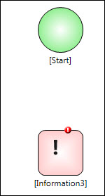

No
In the Process Designer, you can add an activity to the design mosaic by dragging and dropping it. For a detailed explanation of activity properties, see Using Activities.
This will drop the icon for the selected activity at the desired location. Note the red marker indicating that the properties have not been set for this activity.
